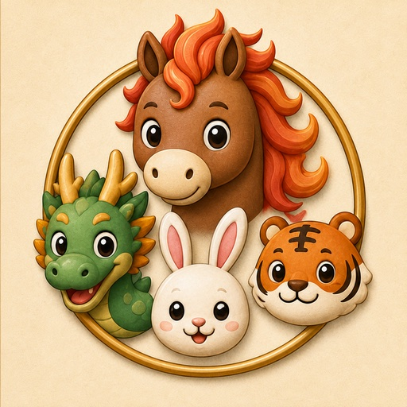
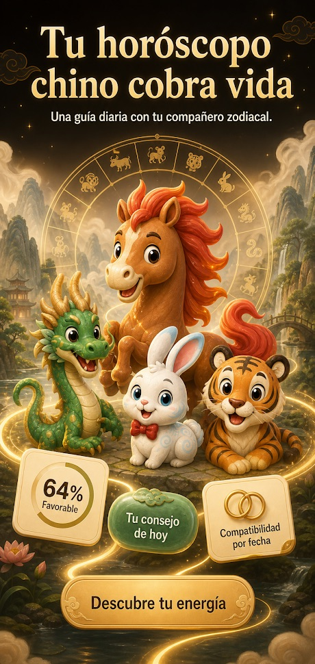
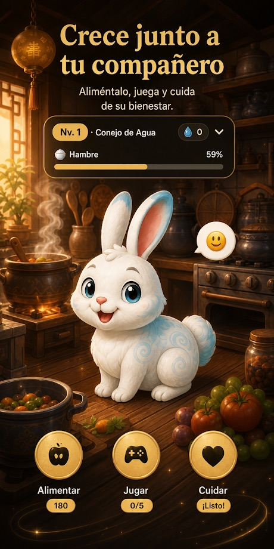
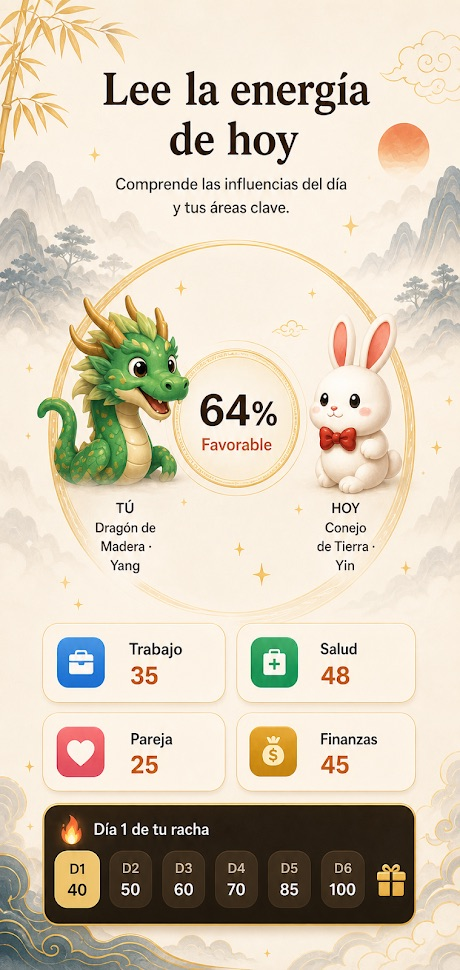
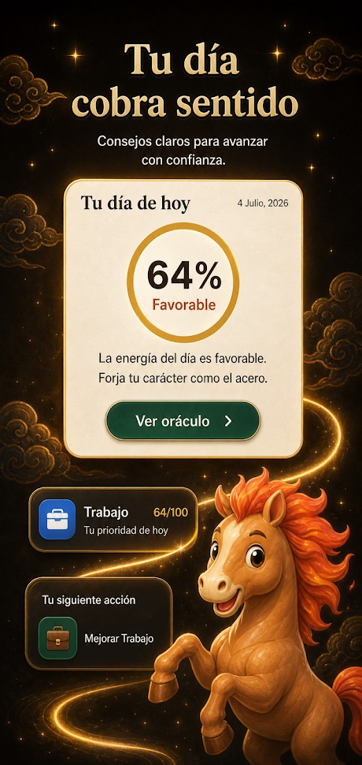
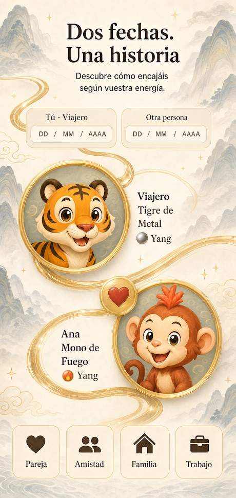
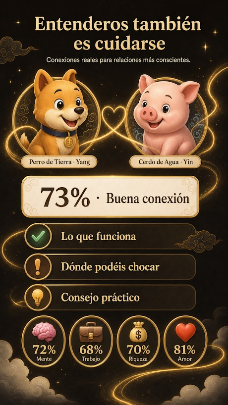

Horóscopo Chino Zodiaco 2026
Horóscopo diario chino 2026: tu signo, compatibilidad y una mascota que crece
- Gratis
- +1000 descargas
- Horóscopo diario
- Compatibilidad
- Mascota
Así es por dentro






¿Qué es esta app?
Una app del zodiaco chino que convierte la astrología china en un hábito diario. Con tu fecha de nacimiento calcula tu animal, tu Elemento (Madera, Fuego, Tierra, Metal o Agua) y tu energía Yin/Yang.
Cada día te da un oráculo nuevo, tus horas, dirección, color y número de la suerte, y pequeñas misiones en ocho áreas de tu vida, con una mascota del zodiaco que crece contigo.
- Calculadora del zodiaco chino: animal, Elemento y Yin/Yang a partir de tu fecha de nacimiento
- Un oráculo diario y la predicción del año completo
- Horas, dirección, color y número de la suerte de cada día
- Afinidad con cualquiera, o entre otras dos personas, en amor, amistad, familia o trabajo
- Ocho áreas de tu vida en un gráfico de radar, con misiones diarias
- Una mascota del zodiaco con niveles, tienda y ruleta de premios
¿Cuál es mi signo del zodiaco chino?
Pon tu fecha de nacimiento y la app te dice tu animal (Rata, Buey, Tigre, Conejo, Dragón, Serpiente, Caballo, Cabra, Mono, Gallo, Perro o Cerdo), tu Elemento y tu energía Yin/Yang en segundos, sin registrarte.
¿Puedo ver la compatibilidad con alguien?
Sí. Compárate con cualquiera, o compara a otras dos personas, por fecha de nacimiento o por signo, en amor, amistad, familia o trabajo. La otra persona no necesita la app.
¿Es la misma lectura para todo el mundo?
No. La lectura diaria sale de tu carta y de la energía del día.
¿En qué móviles funciona?
Android, en Google Play, en 19 idiomas.
What is this app?
A Chinese zodiac app that turns Chinese astrology into a daily habit. From your birth date it calculates your animal sign, your Element (Wood, Fire, Earth, Metal or Water) and your Yin/Yang energy.
Every day it gives you a fresh oracle reading, your lucky hours, direction, colour and number, and small missions across eight areas of your life, with a zodiac companion that grows as you go.
- Chinese zodiac calculator: animal, Element and Yin/Yang from your birth date
- A daily oracle reading and a full year forecast
- Daily lucky hours, lucky direction, colour and number
- Affinity with anyone, or between two other people, for love, friendship, family or work
- Eight life areas on a radar chart, with daily missions
- A zodiac companion with levels, a shop and a reward wheel
What is my Chinese zodiac sign?
Enter your birth date and the app tells you your animal (Rat, Ox, Tiger, Rabbit, Dragon, Snake, Horse, Goat, Monkey, Rooster, Dog or Pig), your Element and your Yin/Yang energy in seconds, with no sign-up.
Can I check compatibility with someone?
Yes. Compare yourself with anyone, or two other people, by birth date or by sign, for love, friendship, family or work. The other person does not need the app.
Is it the same reading for everyone?
No. The daily reading is built from your own chart and the energy of the day.
Which devices does it work on?
Android, on Google Play, in 19 languages.
ما هذا التطبيق؟
تطبيق للبرج الصيني يحوّل علم الفلك الصيني إلى عادة يومية. انطلاقًا من تاريخ ميلادك يحسب حيوانك الصيني وعنصرك (الخشب أو النار أو الأرض أو المعدن أو الماء) وطاقة اليين واليانغ لديك.
يقدّم لك كل يوم قراءة جديدة من العرّاف، وساعات حظك واتجاهه ولونه ورقمه، ومهامّ صغيرة في ثمانية مجالات من حياتك، مع رفيق من حيوانات البرج ينمو معك.
- حاسبة البرج الصيني: الحيوان والعنصر واليين/اليانغ من تاريخ ميلادك
- قراءة يومية من العرّاف وتوقعات للسنة كاملة
- ساعات الحظ واتجاه الحظ ولونه ورقمه كل يوم
- التوافق مع أي شخص، أو بين شخصين آخرين، في الحب أو الصداقة أو العائلة أو العمل
- ثمانية مجالات في الحياة على مخطط راداري، مع مهام يومية
- رفيق من حيوانات البرج بمستويات ومتجر وعجلة جوائز
ما هو برجي الصيني؟
أدخل تاريخ ميلادك ويخبرك التطبيق في ثوانٍ بحيوانك (الفأر أو الثور أو النمر أو الأرنب أو التنين أو الأفعى أو الحصان أو الماعز أو القرد أو الديك أو الكلب أو الخنزير) وعنصرك وطاقة اليين/اليانغ لديك، دون الحاجة إلى التسجيل.
هل يمكنني معرفة التوافق مع شخص ما؟
نعم. قارن نفسك بأي شخص، أو قارن بين شخصين آخرين، حسب تاريخ الميلاد أو البرج، في الحب أو الصداقة أو العائلة أو العمل. لا يحتاج الشخص الآخر إلى التطبيق.
هل القراءة نفسها للجميع؟
لا. تُبنى القراءة اليومية على خريطتك الشخصية وطاقة اليوم.
على أي الأجهزة يعمل؟
على أندرويد، عبر Google Play، بـ19 لغة.
এই অ্যাপটি কী?
একটি চীনা রাশিচক্রের অ্যাপ, যা চীনা জ্যোতিষকে প্রতিদিনের অভ্যাসে পরিণত করে। আপনার জন্মতারিখ থেকে এটি আপনার প্রাণী-রাশি, আপনার উপাদান (কাঠ, আগুন, মাটি, ধাতু বা জল) এবং আপনার ইন/ইয়াং শক্তি হিসাব করে।
প্রতিদিন এটি আপনাকে নতুন ওরাকল পাঠ, ভাগ্যবান সময়, দিক, রং ও সংখ্যা এবং জীবনের আটটি ক্ষেত্রে ছোট ছোট মিশন দেয়, সঙ্গে থাকে একটি রাশিচক্র-সঙ্গী, যে আপনার সঙ্গে বড় হয়।
- চীনা রাশিচক্র ক্যালকুলেটর: জন্মতারিখ থেকে প্রাণী, উপাদান ও ইন/ইয়াং
- প্রতিদিনের ওরাকল পাঠ এবং পুরো বছরের পূর্বাভাস
- প্রতিদিনের ভাগ্যবান সময়, ভাগ্যবান দিক, রং ও সংখ্যা
- যে কারও সঙ্গে, বা অন্য দুজনের মধ্যে, প্রেম, বন্ধুত্ব, পরিবার বা কাজের ক্ষেত্রে সামঞ্জস্য
- রাডার চার্টে জীবনের আটটি ক্ষেত্র, সঙ্গে দৈনিক মিশন
- লেভেল, দোকান ও পুরস্কারের চাকাসহ একটি রাশিচক্র-সঙ্গী
আমার চীনা রাশি কী?
জন্মতারিখ দিন, অ্যাপ কয়েক সেকেন্ডেই আপনার প্রাণী (ইঁদুর, ষাঁড়, বাঘ, খরগোশ, ড্রাগন, সাপ, ঘোড়া, ছাগল, বানর, মোরগ, কুকুর বা শূকর), উপাদান এবং ইন/ইয়াং শক্তি জানিয়ে দেবে, কোনো সাইন-আপ ছাড়াই।
কারও সঙ্গে সামঞ্জস্য দেখা যায় কি?
হ্যাঁ। জন্মতারিখ বা রাশি দিয়ে নিজেকে যে কারও সঙ্গে, বা অন্য দুজনকে পরস্পরের সঙ্গে তুলনা করুন, প্রেম, বন্ধুত্ব, পরিবার বা কাজের ক্ষেত্রে। অন্য ব্যক্তির অ্যাপ লাগবে না।
সবার জন্য কি একই পাঠ?
না। দৈনিক পাঠ তৈরি হয় আপনার নিজের জন্মছক এবং সেই দিনের শক্তি থেকে।
কোন ডিভাইসে চলে?
অ্যান্ড্রয়েডে, Google Play-তে, ১৯টি ভাষায়।
Was ist diese App?
Eine App für das chinesische Tierkreiszeichen, die chinesische Astrologie zur täglichen Gewohnheit macht. Aus deinem Geburtsdatum berechnet sie dein Tierzeichen, dein Element (Holz, Feuer, Erde, Metall oder Wasser) und deine Yin/Yang-Energie.
Jeden Tag bekommst du eine frische Orakel-Deutung, deine Glücksstunden, Glücksrichtung, Glücksfarbe und Glückszahl sowie kleine Missionen in acht Lebensbereichen, dazu einen Tierkreis-Begleiter, der mit dir wächst.
- Rechner für das chinesische Tierkreiszeichen: Tier, Element und Yin/Yang aus deinem Geburtsdatum
- Eine tägliche Orakel-Deutung und die Prognose für das ganze Jahr
- Tägliche Glücksstunden, Glücksrichtung, Glücksfarbe und Glückszahl
- Affinität mit jedem Menschen oder zwischen zwei anderen Personen, für Liebe, Freundschaft, Familie oder Beruf
- Acht Lebensbereiche in einem Radardiagramm, mit täglichen Missionen
- Ein Tierkreis-Begleiter mit Levels, Shop und Glücksrad
Was ist mein chinesisches Tierkreiszeichen?
Gib dein Geburtsdatum ein, und die App nennt dir in Sekunden dein Tier (Ratte, Ochse, Tiger, Hase, Drache, Schlange, Pferd, Ziege, Affe, Hahn, Hund oder Schwein), dein Element und deine Yin/Yang-Energie, ganz ohne Registrierung.
Kann ich die Kompatibilität mit jemandem prüfen?
Ja. Vergleiche dich mit jedem Menschen oder zwei andere Personen miteinander, per Geburtsdatum oder Tierzeichen, für Liebe, Freundschaft, Familie oder Beruf. Die andere Person braucht die App nicht.
Ist die Deutung für alle gleich?
Nein. Die tägliche Deutung entsteht aus deinem eigenen Horoskop und der Energie des Tages.
Auf welchen Geräten läuft sie?
Auf Android, bei Google Play, in 19 Sprachen.
Qu'est-ce que cette appli ?
Une appli du zodiaque chinois qui transforme l'astrologie chinoise en habitude quotidienne. À partir de ta date de naissance, elle calcule ton animal, ton élément (Bois, Feu, Terre, Métal ou Eau) et ton énergie Yin/Yang.
Chaque jour, elle te livre un nouvel oracle, tes heures, ta direction, ta couleur et ton chiffre porte-bonheur, ainsi que de petites missions dans huit domaines de ta vie, avec un compagnon du zodiaque qui grandit avec toi.
- Calculateur du zodiaque chinois : animal, élément et Yin/Yang à partir de ta date de naissance
- Un oracle quotidien et les prévisions de toute l'année
- Heures, direction, couleur et chiffre porte-bonheur de chaque jour
- Affinités avec n'importe qui, ou entre deux autres personnes, en amour, amitié, famille ou travail
- Huit domaines de vie sur un graphique radar, avec des missions quotidiennes
- Un compagnon du zodiaque avec des niveaux, une boutique et une roue de récompenses
Quel est mon signe du zodiaque chinois ?
Entre ta date de naissance et l'appli te donne en quelques secondes ton animal (Rat, Bœuf, Tigre, Lapin, Dragon, Serpent, Cheval, Chèvre, Singe, Coq, Chien ou Cochon), ton élément et ton énergie Yin/Yang, sans inscription.
Puis-je voir la compatibilité avec quelqu'un ?
Oui. Compare-toi avec n'importe qui, ou compare deux autres personnes, par date de naissance ou par signe, en amour, amitié, famille ou travail. L'autre personne n'a pas besoin de l'appli.
La lecture est-elle la même pour tout le monde ?
Non. La lecture du jour est construite à partir de ton propre thème et de l'énergie du jour.
Sur quels appareils fonctionne-t-elle ?
Sur Android, via Google Play, en 19 langues.
यह ऐप क्या है?
एक चीनी राशि ऐप, जो चीनी ज्योतिष को रोज़ की आदत बना देता है। आपकी जन्मतिथि से यह आपकी पशु राशि, आपका तत्व (लकड़ी, आग, मिट्टी, धातु या पानी) और आपकी यिन/यांग ऊर्जा निकालता है।
हर दिन यह आपको नया ओरेकल संदेश, शुभ समय, शुभ दिशा, शुभ रंग और शुभ अंक देता है, साथ ही आपके जीवन के आठ क्षेत्रों में छोटे-छोटे मिशन भी, और एक राशि साथी जो आपके साथ-साथ बढ़ता है।
- चीनी राशि कैलकुलेटर: जन्मतिथि से पशु राशि, तत्व और यिन/यांग
- रोज़ का ओरेकल संदेश और पूरे साल का पूर्वानुमान
- हर दिन के शुभ समय, शुभ दिशा, रंग और अंक
- किसी के भी साथ, या दो अन्य लोगों के बीच, प्रेम, दोस्ती, परिवार या काम में अनुकूलता
- रेडार चार्ट पर जीवन के आठ क्षेत्र, रोज़ाना मिशन के साथ
- लेवल, शॉप और इनाम व्हील वाला एक राशि साथी
मेरी चीनी राशि क्या है?
अपनी जन्मतिथि डालें और ऐप कुछ ही सेकंड में आपकी पशु राशि (चूहा, बैल, बाघ, खरगोश, ड्रैगन, साँप, घोड़ा, बकरी, बंदर, मुर्गा, कुत्ता या सुअर), आपका तत्व और आपकी यिन/यांग ऊर्जा बता देता है, वह भी बिना साइन-अप के।
क्या किसी के साथ अनुकूलता देखी जा सकती है?
हाँ। जन्मतिथि या राशि से खुद को किसी के भी साथ, या दो अन्य लोगों की आपस में तुलना करें, प्रेम, दोस्ती, परिवार या काम के लिए। दूसरे व्यक्ति को ऐप की ज़रूरत नहीं है।
क्या सबके लिए एक ही संदेश होता है?
नहीं। रोज़ का संदेश आपकी अपनी कुंडली और उस दिन की ऊर्जा से बनता है।
यह किन डिवाइस पर चलता है?
Android पर, Google Play में, 19 भाषाओं में।
Apa itu aplikasi ini?
Aplikasi shio Tionghoa yang menjadikan astrologi Tionghoa kebiasaan harian. Dari tanggal lahirmu, aplikasi ini menghitung hewan shio, Elemen (Kayu, Api, Tanah, Logam, atau Air), dan energi Yin/Yang-mu.
Setiap hari kamu mendapat bacaan orakel baru, jam, arah, warna, dan angka keberuntunganmu, serta misi-misi kecil di delapan bidang kehidupan, ditemani pendamping shio yang tumbuh bersamamu.
- Kalkulator shio Tionghoa: hewan, Elemen, dan Yin/Yang dari tanggal lahirmu
- Bacaan orakel harian dan ramalan setahun penuh
- Jam, arah, warna, dan angka keberuntungan setiap hari
- Kecocokan dengan siapa saja, atau antara dua orang lain, untuk cinta, persahabatan, keluarga, atau pekerjaan
- Delapan bidang kehidupan dalam grafik radar, lengkap dengan misi harian
- Pendamping shio dengan level, toko, dan roda hadiah
Apa shio Tionghoa saya?
Masukkan tanggal lahirmu dan aplikasi langsung memberi tahu hewan shiomu (Tikus, Kerbau, Macan, Kelinci, Naga, Ular, Kuda, Kambing, Monyet, Ayam, Anjing, atau Babi), Elemen, dan energi Yin/Yang-mu dalam hitungan detik, tanpa perlu mendaftar.
Bisakah saya melihat kecocokan dengan seseorang?
Bisa. Bandingkan dirimu dengan siapa saja, atau dua orang lain, berdasarkan tanggal lahir atau shio, untuk cinta, persahabatan, keluarga, atau pekerjaan. Orang tersebut tidak perlu memakai aplikasinya.
Apakah bacaannya sama untuk semua orang?
Tidak. Bacaan harian dibuat dari bagan pribadimu dan energi hari itu.
Di perangkat apa aplikasi ini berjalan?
Android, di Google Play, dalam 19 bahasa.
Cos'è questa app?
Un'app dello zodiaco cinese che trasforma l'astrologia cinese in un'abitudine quotidiana. A partire dalla tua data di nascita calcola il tuo animale, il tuo Elemento (Legno, Fuoco, Terra, Metallo o Acqua) e la tua energia Yin/Yang.
Ogni giorno ti offre un nuovo responso dell'oracolo, le tue ore, direzione, colore e numero fortunati, e piccole missioni in otto aree della tua vita, con un compagno dello zodiaco che cresce insieme a te.
- Calcolatore dello zodiaco cinese: animale, Elemento e Yin/Yang dalla tua data di nascita
- Un responso quotidiano dell'oracolo e le previsioni dell'intero anno
- Ore, direzione, colore e numero fortunati di ogni giorno
- Affinità con chiunque, o tra altre due persone, in amore, amicizia, famiglia o lavoro
- Otto aree della vita in un grafico radar, con missioni quotidiane
- Un compagno dello zodiaco con livelli, negozio e ruota dei premi
Qual è il mio segno dello zodiaco cinese?
Inserisci la tua data di nascita e l'app ti dice in pochi secondi il tuo animale (Topo, Bue, Tigre, Coniglio, Drago, Serpente, Cavallo, Capra, Scimmia, Gallo, Cane o Maiale), il tuo Elemento e la tua energia Yin/Yang, senza registrazione.
Posso vedere la compatibilità con qualcuno?
Sì. Confrontati con chiunque, o confronta altre due persone, per data di nascita o per segno, in amore, amicizia, famiglia o lavoro. L'altra persona non ha bisogno dell'app.
La lettura è uguale per tutti?
No. La lettura quotidiana nasce dal tuo tema personale e dall'energia del giorno.
Su quali dispositivi funziona?
Android, su Google Play, in 19 lingue.
このアプリとは？
中国の干支占いを毎日の習慣にする、十二支アプリです。生年月日から、あなたの干支の動物、五行（木・火・土・金・水）、そして陰陽のエネルギーを割り出します。
毎日、新しいオラクルのお告げ、ラッキーな時間・方角・色・数字、そして暮らしの8つの分野での小さなミッションをお届けします。あなたと一緒に成長する干支のコンパニオンもいます。
- 干支計算機：生年月日から動物、五行、陰陽がわかる
- 毎日のオラクルのお告げと、一年分の運勢予測
- 毎日のラッキータイム、ラッキー方位、ラッキーカラー、ラッキーナンバー
- 誰とでも、または他の二人の間でも、恋愛・友情・家族・仕事の相性を診断
- 人生の8分野をレーダーチャートで表示、毎日のミッション付き
- レベル、ショップ、ごほうびルーレットのある干支コンパニオン
私の干支は何ですか？
生年月日を入力するだけで、アプリがあなたの動物（ネズミ、ウシ、トラ、ウサギ、リュウ、ヘビ、ウマ、ヒツジ、サル、ニワトリ、イヌ、イノシシ）、五行、陰陽のエネルギーを数秒で教えてくれます。登録は不要です。
誰かとの相性は見られますか？
はい。生年月日または干支で、自分と誰か、あるいは他の二人を、恋愛・友情・家族・仕事の面で比べられます。相手がアプリを使っている必要はありません。
みんな同じ内容ですか？
いいえ。毎日のお告げは、あなた自身の命式とその日のエネルギーから作られます。
どの端末で使えますか？
Google Play の Android 向けで、19言語に対応しています。
이 앱은 무엇인가요?
중국 점성술을 매일의 습관으로 만들어 주는 중국 띠 앱이에요. 생년월일로 나의 띠 동물, 오행 원소(목, 화, 토, 금, 수), 음양의 기운을 계산해 줘요.
매일 새로운 오라클 풀이와 행운의 시간, 방향, 색, 숫자, 그리고 삶의 여덟 가지 영역에 걸친 작은 미션을 받아 보세요. 나와 함께 성장하는 띠 동반자도 있어요.
- 중국 띠 계산기: 생년월일로 띠 동물, 오행, 음양 확인
- 매일의 오라클 풀이와 1년 전체 운세
- 매일의 행운의 시간, 행운의 방향, 색, 숫자
- 누구와도, 또는 다른 두 사람 사이의 궁합을 사랑, 우정, 가족, 직장 면에서 확인
- 레이더 차트로 보는 삶의 여덟 영역과 일일 미션
- 레벨, 상점, 보상 룰렛이 있는 띠 동반자
내 중국 띠는 무엇인가요?
생년월일을 입력하면 가입 없이 몇 초 만에 나의 띠 동물(쥐, 소, 호랑이, 토끼, 용, 뱀, 말, 양, 원숭이, 닭, 개, 돼지), 오행 원소, 음양의 기운을 알려 줘요.
다른 사람과의 궁합도 볼 수 있나요?
네. 생년월일이나 띠로 나를 누구와도, 또는 다른 두 사람을 서로 비교해 사랑, 우정, 가족, 직장 궁합을 볼 수 있어요. 상대방은 앱이 없어도 돼요.
모든 사람에게 같은 풀이가 나오나요?
아니요. 매일의 풀이는 나의 차트와 그날의 기운으로 만들어져요.
어떤 기기에서 쓸 수 있나요?
Google Play의 Android에서 19개 언어로 쓸 수 있어요.
Apakah aplikasi ini?
Aplikasi zodiak Cina yang menjadikan astrologi Cina sebagai rutin harian. Daripada tarikh lahir anda, ia mengira haiwan zodiak, Unsur (Kayu, Api, Bumi, Logam atau Air) dan tenaga Yin/Yang anda.
Setiap hari ia memberikan bacaan oracle yang baharu, waktu, arah, warna dan nombor bertuah anda, serta misi kecil dalam lapan bidang kehidupan, bersama teman zodiak yang membesar bersama anda.
- Kalkulator zodiak Cina: haiwan, Unsur dan Yin/Yang daripada tarikh lahir anda
- Bacaan oracle harian dan ramalan setahun penuh
- Waktu, arah, warna dan nombor bertuah setiap hari
- Keserasian dengan sesiapa sahaja, atau antara dua orang lain, dalam cinta, persahabatan, keluarga atau kerjaya
- Lapan bidang kehidupan pada carta radar, dengan misi harian
- Teman zodiak dengan tahap, kedai dan roda hadiah
Apakah zodiak Cina saya?
Masukkan tarikh lahir anda dan aplikasi memberitahu haiwan anda (Tikus, Lembu, Harimau, Arnab, Naga, Ular, Kuda, Kambing, Monyet, Ayam, Anjing atau Babi), Unsur dan tenaga Yin/Yang anda dalam beberapa saat, tanpa perlu mendaftar.
Bolehkah saya semak keserasian dengan seseorang?
Boleh. Bandingkan diri anda dengan sesiapa sahaja, atau dua orang lain, mengikut tarikh lahir atau zodiak, dalam cinta, persahabatan, keluarga atau kerjaya. Orang lain itu tidak perlu memiliki aplikasi ini.
Adakah bacaannya sama untuk semua orang?
Tidak. Bacaan harian dibina daripada carta anda sendiri dan tenaga hari itu.
Pada peranti apakah ia berfungsi?
Android, di Google Play, dalam 19 bahasa.
O que é este app?
Um app do zodíaco chinês que transforma a astrologia chinesa em hábito diário. A partir da sua data de nascimento, ele calcula o seu animal, o seu Elemento (Madeira, Fogo, Terra, Metal ou Água) e a sua energia Yin/Yang.
Todo dia ele traz uma nova leitura do oráculo, seus horários, direção, cor e número da sorte, e pequenas missões em oito áreas da sua vida, com um companheiro do zodíaco que cresce com você.
- Calculadora do zodíaco chinês: animal, Elemento e Yin/Yang a partir da sua data de nascimento
- Uma leitura diária do oráculo e a previsão do ano inteiro
- Horários, direção, cor e número da sorte de cada dia
- Afinidade com qualquer pessoa, ou entre duas outras pessoas, no amor, na amizade, na família ou no trabalho
- Oito áreas da vida em um gráfico de radar, com missões diárias
- Um companheiro do zodíaco com níveis, loja e roleta de prêmios
Qual é o meu signo do zodíaco chinês?
Informe sua data de nascimento e o app mostra em segundos o seu animal (Rato, Boi, Tigre, Coelho, Dragão, Serpente, Cavalo, Cabra, Macaco, Galo, Cão ou Porco), o seu Elemento e a sua energia Yin/Yang, sem precisar de cadastro.
Posso ver a compatibilidade com alguém?
Sim. Compare você com qualquer pessoa, ou compare duas outras pessoas, pela data de nascimento ou pelo signo, no amor, na amizade, na família ou no trabalho. A outra pessoa não precisa ter o app.
A leitura é igual para todo mundo?
Não. A leitura diária é feita a partir do seu próprio mapa e da energia do dia.
Em quais aparelhos funciona?
No Android, pelo Google Play, em 19 idiomas.
Что это за приложение?
Приложение по китайскому зодиаку, которое превращает китайскую астрологию в ежедневную привычку. По дате рождения оно определяет ваше животное, вашу стихию (Дерево, Огонь, Земля, Металл или Вода) и энергию Инь/Ян.
Каждый день вас ждут новое предсказание оракула, счастливые часы, направление, цвет и число, а также небольшие задания в восьми сферах жизни, и спутник по зодиаку, который растёт вместе с вами.
- Калькулятор китайского зодиака: животное, стихия и Инь/Ян по дате рождения
- Ежедневное предсказание оракула и прогноз на весь год
- Счастливые часы, направление, цвет и число на каждый день
- Совместимость с кем угодно или между двумя другими людьми: в любви, дружбе, семье или работе
- Восемь сфер жизни на радарной диаграмме, с ежедневными заданиями
- Спутник по зодиаку с уровнями, магазином и колесом наград
Какой у меня знак китайского зодиака?
Введите дату рождения, и приложение за секунды покажет ваше животное (Крыса, Бык, Тигр, Кролик, Дракон, Змея, Лошадь, Коза, Обезьяна, Петух, Собака или Свинья), вашу стихию и энергию Инь/Ян, без регистрации.
Можно ли проверить совместимость с кем-то?
Да. Сравните себя с кем угодно или двух других людей, по дате рождения или по знаку, в любви, дружбе, семье или работе. Второму человеку приложение не нужно.
Одинаковое ли предсказание для всех?
Нет. Ежедневное предсказание строится на вашей личной карте и энергии дня.
На каких устройствах работает?
На Android, в Google Play, на 19 языках.
แอปนี้คืออะไร
แอปปีนักษัตรจีนที่ทำให้โหราศาสตร์จีนเป็นกิจวัตรประจำวัน จากวันเกิดของคุณ แอปจะคำนวณปีนักษัตร ธาตุของคุณ (ไม้ ไฟ ดิน โลหะ หรือน้ำ) และพลังหยิน/หยาง
ทุกวันคุณจะได้รับคำทำนายใหม่จากออราเคิล พร้อมชั่วโมงมงคล ทิศมงคล สีมงคล และเลขมงคล รวมถึงภารกิจเล็กๆ ใน 8 ด้านของชีวิต โดยมีเพื่อนคู่ใจประจำราศีที่เติบโตไปพร้อมกับคุณ
- เครื่องคำนวณปีนักษัตรจีน: สัตว์ประจำปี ธาตุ และหยิน/หยางจากวันเกิดของคุณ
- คำทำนายจากออราเคิลรายวัน และดวงชะตาตลอดทั้งปี
- ชั่วโมงมงคล ทิศมงคล สีมงคล และเลขมงคลของแต่ละวัน
- ดูความเข้ากันกับใครก็ได้ หรือระหว่างคนอื่นสองคน ทั้งเรื่องความรัก มิตรภาพ ครอบครัว หรือการงาน
- 8 ด้านของชีวิตบนแผนภูมิเรดาร์ พร้อมภารกิจรายวัน
- เพื่อนคู่ใจประจำปีนักษัตรที่มีเลเวล ร้านค้า และวงล้อรางวัล
ปีนักษัตรจีนของฉันคืออะไร
ใส่วันเกิดของคุณ แล้วแอปจะบอกสัตว์ประจำปี (หนู วัว เสือ กระต่าย มังกร งู ม้า แพะ ลิง ไก่ สุนัข หรือหมู) ธาตุ และพลังหยิน/หยางของคุณได้ในไม่กี่วินาที โดยไม่ต้องสมัครสมาชิก
ดูความเข้ากันกับใครได้ไหม
ได้ เปรียบเทียบตัวคุณกับใครก็ได้ หรือเปรียบเทียบคนอื่นสองคน โดยใช้วันเกิดหรือปีนักษัตร ทั้งเรื่องความรัก มิตรภาพ ครอบครัว หรือการงาน อีกฝ่ายไม่จำเป็นต้องมีแอป
ทุกคนได้คำทำนายเหมือนกันหรือไม่
ไม่ คำทำนายรายวันสร้างจากดวงชะตาของคุณเองและพลังงานของวันนั้น
ใช้ได้กับอุปกรณ์อะไร
Android บน Google Play รองรับ 19 ภาษา
Bu uygulama nedir?
Çin astrolojisini günlük bir alışkanlığa dönüştüren bir Çin burcu uygulaması. Doğum tarihinden hayvan burcunu, Elementini (Ağaç, Ateş, Toprak, Metal veya Su) ve Yin/Yang enerjini hesaplar.
Her gün sana yeni bir kehanet yorumu, şanslı saatlerini, yönünü, rengini ve sayını, ayrıca hayatının sekiz alanında küçük görevler sunar; yanında seninle birlikte büyüyen bir burç arkadaşı da olur.
- Çin burcu hesaplayıcı: doğum tarihinden hayvan, Element ve Yin/Yang
- Günlük kehanet yorumu ve yılın tamamı için tahmin
- Her günün şanslı saatleri, şanslı yönü, rengi ve sayısı
- Herkesle ya da başka iki kişi arasında aşk, arkadaşlık, aile veya iş uyumu
- Radar grafiğinde hayatın sekiz alanı ve günlük görevler
- Seviyeleri, mağazası ve ödül çarkı olan bir burç arkadaşı
Çin burcum nedir?
Doğum tarihini gir, uygulama saniyeler içinde hayvanını (Fare, Öküz, Kaplan, Tavşan, Ejderha, Yılan, At, Keçi, Maymun, Horoz, Köpek veya Domuz), Elementini ve Yin/Yang enerjini söylesin; üyelik gerekmez.
Biriyle uyumluluğa bakabilir miyim?
Evet. Kendini herhangi biriyle ya da başka iki kişiyi doğum tarihine veya burca göre aşk, arkadaşlık, aile veya iş açısından karşılaştırabilirsin. Karşındaki kişinin uygulamaya ihtiyacı yok.
Yorum herkes için aynı mı?
Hayır. Günlük yorum, senin kendi haritandan ve günün enerjisinden oluşur.
Hangi cihazlarda çalışır?
Android'de, Google Play üzerinden, 19 dilde.
Ứng dụng này là gì?
Ứng dụng con giáp Trung Hoa biến chiêm tinh Trung Hoa thành thói quen mỗi ngày. Từ ngày sinh của bạn, ứng dụng tính ra con giáp, Ngũ hành (Mộc, Hỏa, Thổ, Kim hoặc Thủy) và năng lượng Âm/Dương của bạn.
Mỗi ngày bạn nhận được một lá oracle mới, giờ, hướng, màu và con số may mắn, cùng những nhiệm vụ nhỏ trong tám lĩnh vực cuộc sống, với một bạn đồng hành con giáp lớn lên cùng bạn.
- Công cụ tính con giáp Trung Hoa: con giáp, Ngũ hành và Âm/Dương từ ngày sinh
- Lời sấm oracle mỗi ngày và dự báo cả năm
- Giờ, hướng, màu và con số may mắn mỗi ngày
- Độ hợp với bất kỳ ai, hoặc giữa hai người khác, về tình yêu, tình bạn, gia đình hay công việc
- Tám lĩnh vực cuộc sống trên biểu đồ radar, kèm nhiệm vụ hằng ngày
- Một bạn đồng hành con giáp có cấp độ, cửa hàng và vòng quay thưởng
Con giáp Trung Hoa của tôi là gì?
Nhập ngày sinh, ứng dụng sẽ cho bạn biết con giáp (Chuột, Trâu, Hổ, Thỏ, Rồng, Rắn, Ngựa, Dê, Khỉ, Gà, Chó hoặc Lợn), Ngũ hành và năng lượng Âm/Dương của bạn chỉ trong vài giây, không cần đăng ký.
Tôi có xem được độ hợp với ai đó không?
Có. Hãy so sánh bạn với bất kỳ ai, hoặc so sánh hai người khác, theo ngày sinh hoặc con giáp, về tình yêu, tình bạn, gia đình hay công việc. Người kia không cần dùng ứng dụng.
Mọi người đều nhận cùng một lời đọc sao?
Không. Lời đọc hằng ngày được tạo từ lá số riêng của bạn và năng lượng của ngày hôm đó.
Ứng dụng chạy trên thiết bị nào?
Android, trên Google Play, với 19 ngôn ngữ.
这是一款什么应用？
一款生肖应用，让中国命理成为每天的习惯。根据你的出生日期，它会算出你的生肖、五行（木、火、土、金、水）和阴阳能量。
每天为你送上全新的神谕解读、吉时、吉方、幸运色和幸运数字，还有涵盖生活八大领域的小任务，并有一位生肖伙伴陪你一起成长。
- 生肖计算器：根据出生日期查询生肖、五行和阴阳
- 每日神谕解读和全年运势预测
- 每天的吉时、吉方、幸运色和幸运数字
- 与任何人，或另外两个人之间的缘分配对，涵盖爱情、友情、亲情和工作
- 雷达图呈现生活八大领域，附每日任务
- 生肖伙伴有等级、商店和奖励转盘
我的生肖是什么？
输入出生日期，应用几秒钟就能告诉你的生肖（鼠、牛、虎、兔、龙、蛇、马、羊、猴、鸡、狗或猪）、五行和阴阳能量，无需注册。
可以查看和别人的配对吗？
可以。按出生日期或生肖，把自己与任何人，或者另外两个人进行对比，看爱情、友情、亲情或工作方面的契合度。对方不需要安装应用。
每个人的解读都一样吗？
不一样。每日解读根据你自己的命盘和当天的能量生成。
支持哪些设备？
支持 Android，可在 Google Play 下载，提供 19 种语言。
這是什麼 App？
一款生肖 App，讓中國命理成為每天的習慣。根據你的出生日期，它會算出你的生肖、五行（木、火、土、金、水）和陰陽能量。
每天為你送上全新的神諭解讀、吉時、吉方、幸運色和幸運數字，還有涵蓋生活八大領域的小任務，並有一位生肖夥伴陪你一起成長。
- 生肖計算機：依出生日期查詢生肖、五行和陰陽
- 每日神諭解讀和全年運勢預測
- 每天的吉時、吉方、幸運色和幸運數字
- 與任何人，或另外兩個人之間的緣分配對，涵蓋愛情、友情、親情和工作
- 雷達圖呈現生活八大領域，附每日任務
- 生肖夥伴有等級、商店和獎勵轉盤
我的生肖是什麼？
輸入出生日期，App 幾秒鐘就能告訴你的生肖（鼠、牛、虎、兔、龍、蛇、馬、羊、猴、雞、狗或豬）、五行和陰陽能量，不需註冊。
可以查看和別人的配對嗎？
可以。依出生日期或生肖，把自己與任何人，或另外兩個人做比較，看愛情、友情、親情或工作方面的契合度。對方不需要安裝 App。
每個人的解讀都一樣嗎？
不一樣。每日解讀是依據你自己的命盤和當天的能量生成。
支援哪些裝置？
支援 Android，可在 Google Play 下載，提供 19 種語言。